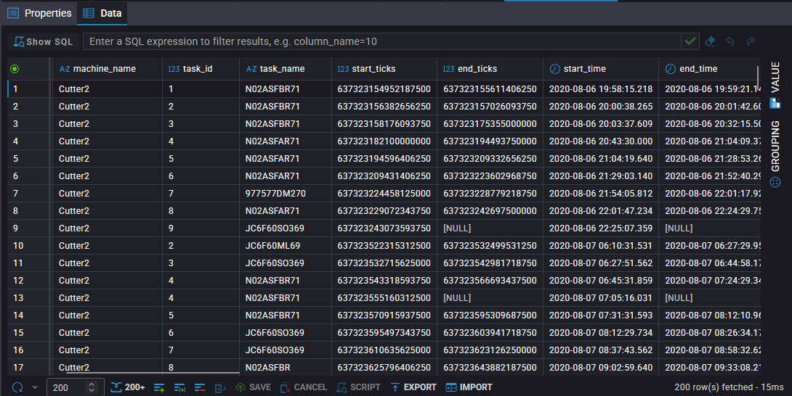
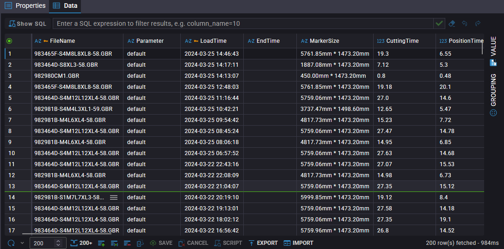

Developed machine data acquisition and database integration systems for industrial equipment, enabling production and machine performance data to be collected, stored, and made available for further monitoring and analysis.
Developed machine data acquisition and database integration systems for industrial equipment, enabling production and machine performance data to be collected, stored, and made available for further monitoring and analysis.


This project strengthened my expertise in industrial data acquisition, machine-to-database integration, industrial IoT, and production data management, while enabling manufacturing data to be transformed into structured information for real-time monitoring and operational analysis.